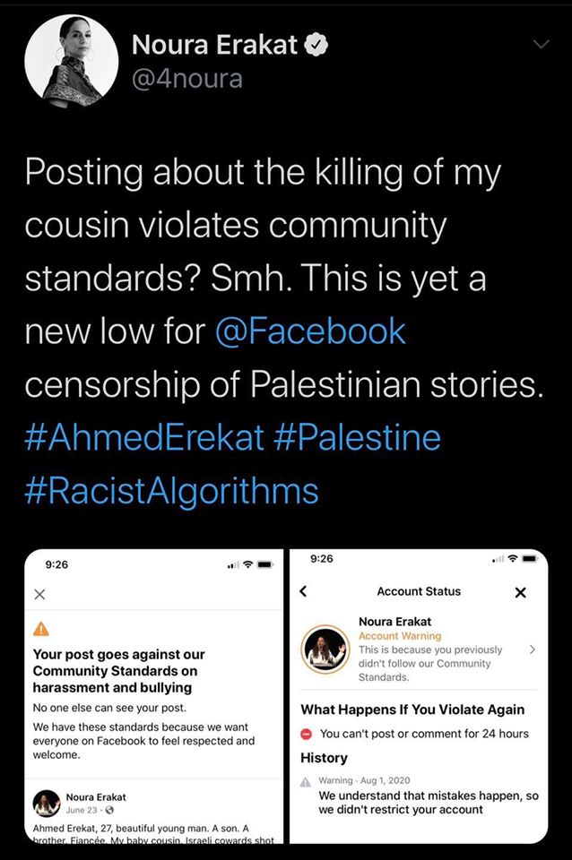

Reflections on Exile in The Digital Age
Growing up, I was not exposed to much literature or films on the Palestinian experience; my understanding of it — culturally, politically, and personally — was limited. But, attending a diverse educational institution for my undergraduate degree propelled me towards Palestinian literature, cinema, and poetry in a desperate attempt to make sense of my Palestinianess. Of course, that process was not exempt from Edward Said’s seminal thoughts and essays.
Edward Said was a Palestinian-American intellectual and a professor at Columbia University who was one of the pioneers of the field of postcolonial studies. Said wrote extensively on his experience being exiled, on culture and imperialism, on orientalism, and on the question of Palestine. Unlike Said, I did not experience exilethe state of being barred from one's native country first hand but was instead born into it. I also grew up with the internet and on the internet, thus, at times, was negotiating barriers and accessabilities of a different kind. Yet, it struck me how relevant and personal Said’s writing felt; even though it was highly specific at times, it was still applicable now, decades later, when my generation’s experience of exile is largely shaped and mediated by a different “world”: the internet.
Of course, this applicability is in large part due to the still ongoing Palestinian struggle, but is also due to the reality that the internet is not as different a world as we think or would like it to be.
While it is true that many of the challenges exiles experience have eased due to the internet’s facilitation, Said’s articulation of these challenges still deeply resonate with my understanding and observations — as an exile and technologist myself — of the ways the internet is and is not allowed to work. Ultimately, the internet is just another human invention, enabled and flawed by the same humans and systems which create and support it. In an attempt to reconcile how the ideas Said reflects on in his writing — including mobility, language, and solitude — manifest, rather than disappear, on the internet, both algorithmically and socially, I present in this article a brief “internet“ reading of Said’s essay “Reflections on Exile.” In this article, I will be responding to excerpts from his essay with, as in the original essay, a personal reflection that is ripe with facts, opinions, and questions in place of answers.
On Mobility and Immobility
“Borders and barriers, which enclose us within the safety of familiar territory, can also become prisons, and are often defended beyond reason or necessity. Exiles cross borders, break barriers of thought and experience.”
Negotiating borders and barriers is an inevitable reality for exiles. Those include language barriers, cultural and religious barriers, country borders, and more. With time, and over generations of exile, some barriers become more prominent than others. Ideally, on the internet, lots of these barriers are meant to be broken: we can access information and connect in many forms to different points all around the world. What this means is that I can have access to my exilic homeland and the people of my exilic homeland can also have access to me via the thoughts and media we can share online. All of this can alleviate the overwhelming feeling of estrangement that is at the center of the exilic experience. However, realistically, while the internet removes many barriers, it still allows many others to exist and even thrive.
One important barrier is language as we experience the internet differently depending on the language(s) we operate in. Many diasporic communities no longer operate in their native tongues — at least not online, especially if they speak English, a lingua franca — and thus cannot afford this ease of access to the content and people of their exilic homelands, who still largely operate in their native tongues, and vice versa. Studies have shown that Twitter users largely restrict their interactions to those who speak the same online language as them. Thus, our ideas and thoughts are mostly restricted to those of us who are similarly a part of the diaspora, and how much we actually know about the experiences and thoughts of the people in our exilic homelands is quite limited .
.
Content moderationmonitoring user-generated social media content to make sure it complies with regulations and guidelines and recommendation systemsproviding users with personalized content are additional examples of barriers that exist in cyberspace. Whether it’s actual human beings as moderators or machine learning algorithms, social media companies seem to have repeatedly failed to appropriately moderate content, while simultaneously not violating people’s democatric rights to speak freely.
Facebook, for instance, has taken down Palestinian accounts and content numerous times. And, so has Twitter. Just a few months ago, Instagram removed supermodel Bella Hadid's post of her father’s passport, which states his birthplace as Palestine, claiming that the simple father’s day post violates their community guidelines on harassment and bullying.
Following this incident, Hadid publicly called out the platform:
Are we not allowed to be Palestinian on Instagram? This, to me, is bullying. You can’t erase history by silencing people. It doesn’t work like that.
This pushed Instagram to apologize to Hadid and explain that it was a “mistake” meant to protect the privacy of their users even though the picture she shared had the passport number blurred out. Additionally, only a few weeks ago, legal scholar and human rights attorney Noura Erakat reported that Facebook took down her post about the killing of her cousin at a checkpoint in Palestine. Facebook claimed that the post violates its community standards on “harrassment and bullying.”
While social media platforms may be working hard to tackle misinformation, credibility, and privacy concerns, it is often at the expense of already marginalized communities as well as at the expense of credible citizen journalism.the collection, dissemination, and analysis of news & information by the general public, especially by means of the internet. This selective censorship — both explicit through removing content and implicit through recommendation algorithms — limits what we are allowed to be exposed to and what we are not and forms remarkable barriers that restrict mobility in cyberspace.
On the Privileges and Benefits of Exile
“I speak of exile not as a privilege, but as an alternative to the mass institutions that dominate modern life. Exile is not, after all, a matter of choice: you are born into it, or it happens to you. But, provided that the exile refuses to sit on the sidelines nursing a wound, there are things to be learned: he or she must cultivate a scrupulous (not indulgent or sulky) subjectivity.”
One could argue that “learning” is no longer attached to physical mobility. In other words, this privilege of learning that was previously attached, at least to the one-time, physical mobility that is afforded to exiles is no longer that exclusive a privilege given the internet’s facilitation of information access. There is no denying that the internet has provided us with a never-ending bank of knowledge. However, firstly, this assumes everyone has equal access or has access at all — a naive and faulty assumption given that only approximately 59% of the global population actually have internet access.
Even if one does have access, not all “accesses” are created equal. Wherever we are in the world, we cannot ignore the role of the privately, governmentally, or publicly owned organizations through which we access the internet, also known as internet service providers (ISPs), in mediating our access to information by censoring and blocking different sites and to different extents when convenient.
Additionally, the undeniable digital language divide means that depending on the language you operate in, your access to information through Google searches or social media searches is a very different experience compared to others who operate in a different language. Different is not always good — especially if you do not speak English.
An Oxford study by Mark Graham and Matthew Zook on Google searches in the West Bank showed that searches in Arabic usually result in only 20% to 25% of the number of results the same search term brings in English. At a time when most of our information has migrated to the digital realm, the privilege of speaking a Western language online, which many, but of course not all, exiles do, is quite notable.
While it helps to separate what is online from what is offline, the line between the two is as blurry as ever as we use the internet to guide even the smallest of our daily activities. The same study I reference above also shows that a search for the word restaurant on Google Maps using three different languages (Arabic, English, and Hebrew) leads users to different parts of the same city for dining options.
These examples of oppression embedded in the economy and infrastructure of the internet show how imperialist structures are allowed to thrive online, and consequently in real life, unchecked and targeting communities in a reinvented colonialism: cyber colonialism. Some of these infringements on internet and information access, which the UN deems a “fundamental human right,” are a serious concern.
On Nationalisms and Solitudes
“Nationalisms are about groups, but in a very acute sense exile is a solitude experienced outside the group: the deprivations felt at not being with others in the communal habituation… The exile is offered a new set of affiliations and develops new loyalties. But there is also a loss of critical perspective, of intellectual reserve, of moral courage… Exiles look at non-exiles with resentment. They belong in their surroundings, you feel, whereas an exile is always out of place. What is it like to be born in a place, to stay and live there, to know that you are of it, more or less, forever?”
These new sets of “affiliations” and “loyalties,” based on experiences that transcend nationalisms, can be understood through “structures of feelingthe idea that we ‘feel’ things before we ‘think’ things ” rather than the solidity of nationalisms. They also eventually create groups of their own. A simple manifestation of this is the concept of allyship and solidarity that has grown in popularity and impact with the growth of the internet and globalization. For instance, a loyalty to justice can be a shared loyalty among different peoples from all around the world. The internet, like social media, allows us to better realize these shared values among exilic, refugee, and marginalized communities globally. The African American struggle in the United States is undoubtedly tied to the Palestinian struggle and the internet makes it easier to see that, participate in it, and form a new sense of belonging to something that, unlike nationalisms, is not as strictly territorially bound.
Another example is the literal creation of "groups," like Facebook meme groups, based on shared cultural and lived experiences, that once again the internet allows us to discover and participate in. Some of these groups, like Subtle Asian Traits1,892,698 members as of July 2020 and Subtle Curry Traits817,999 members as of July 2020, create a sense of belonging centered on the diasporic experience. As human nature has us continually searching for some kind of feeling of belonging that, as Said describes it, fulfils this “deprivation” of not physically being with others who share “similar” experiences, the internet allows us to creatively and at a much larger scale explore and form new “affiliations.”
On New Worlds
“Much of the exile’s life is taken up with compensating for disorienting loss by creating a new world to rule… Seeing “the entire world as a foreign land” makes possible originality of vision.”
While there’s a long way to go in creating an open and inclusive internet, I cannot deny what this new world has given me and many others: the ability to see photos of my homeland literally taken today within a few clicks, the ability to call family I’m separated from with a single link, and the ability to participate in what aspires to be a campaign of constant global communication and education. But, as we experience the extremes of the benefits and injustices of the internet, perhaps this “originality of vision” we might have acquired can help us create a new, healthy internet to rule.
We believe in furthering the conversation on digital exile beyond this article. Here are a few resources from Lujain to get that started:
1. Intellectual Exiles: Expatriates and Marginals | Edward Said
2. The Mozilla Manifesto Addendum: Pledge for a Healthy Internet | The Mozilla Foundation
3. The Digital Language Divide | The Guardian
4. Intifada 3.0? Cyber Colonialism and Palestinian Resistance | Helga Tawil-Souri
5. Algorithms of Oppression: How Search Engines Reinforce Racism | Safiya Noble
---
Ticker is playing Edward Said's original essay Reflections on Exile